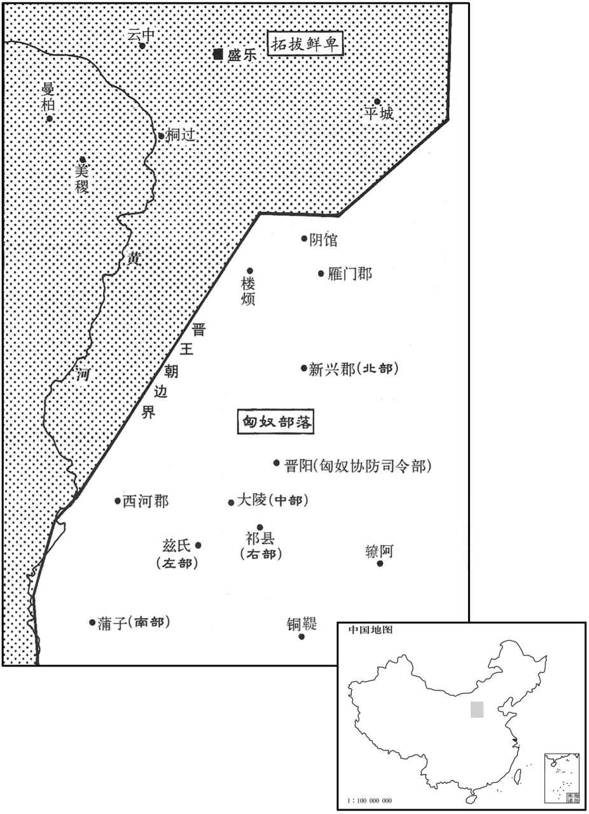

公元270年资治通鉴：本年记事、原文与白话对照
按原书编年位置阅读；追叙和史论不等于本年发生的事件。白话采用所据译本，缺译不以生成译文补齐。
卷79 · 本年记事
公元270年 · 晋世祖武皇帝泰始六年
六年〔（庚寅、二七○）〕
本年事件索引（现代整理）
春，正月，吴丁奉入涡口，〔水经：涡水道受河南阳武县蒗荡渠，东南至下邳淮陵县入淮，谓之涡口。过，音戈。考异曰：吴志丁奉傅：建衡元年，攻晋榖阳。」晋帝纪不载，奉传不言入涡口，疑是一事。〕扬州刺史牵弘击走之。
春季，正月，吴国丁奉进入涡口，扬州刺史牵弘将他击退。
吴万彧自巴丘还建业。
吴国万从巴丘返回建业。
夏，四月，吴左大司马施绩卒。以镇军大将军陆抗都督信陵、西陵、夷道、乐乡、公安诸军事，治乐乡。〔水经注：乐乡城在南平郡之孱陵县，江水径其北，江水又东径公安县北。宋白曰：乐乡者，春秋鄀国之地，其城陆抗所筑，在松滋县界。晋地理志：信陵县属建平郡。沈约曰：疑是吴立。水经注曰：江水自夔城而东，径信陵县南，又东过夷陵县南。夷陵，即西陵也。乐乡城在今江陵府松滋县东，乐乡城北，江中有沙碛，对岸踏浅可渡，江津要害之地也。〕
夏季，四月，吴国左大司马施绩去世。任命镇军大将军陆抗统领信陵、西陵、夷道、乐乡、公安各地的军事，治所设在乐乡。
抗以吴主政事多阙，上疏曰：「臣闻德均则众者胜寡，力侔则安者制危，此六国所以并于秦，西楚所以屈于汉也。今敌之所据，非特关右之地鸿沟以西，而国家外无连衡之授，内非西楚之强，庶政陵迟，黎民未乂。议者所恃，徒以长江峻山限带封域，此乃守国欴末事，非智者之所先也。臣每念及此，中夜抚枕，临餐忘食。夫事君之义，犯而勿欺，谨陈时宜十七条以闻。」〔抗传云：十七条失本不载。〕吴主不纳。
陆抗因吴主处理政事多有过失，上疏说：“我听说在恩德均等的情况下，人多的一方可以战胜人少的一方；在力量相同的情况下，安定的的一方可以制服危难的一方，这正是六国之所以被秦吞并、西楚之所以屈服于汉的原因。现在敌人所凭据的，不只是关西地区，不只是鸿沟以西，而国家外没有六国时连衡之援助，内没有当时西楚那样强大，各种政务衰落，百姓没有得到治理。议论的人们所倚仗的，只不过以长江、高山这些天险为疆界，这是守卫国土中不足为凭的小事，并不是有才智的人首先要考虑的。我每当想到此，半夜里抚摸枕头睡不着，面对饭菜忘记了进食。侍奉君主的道理在于可以冒犯他却不可以欺骗他，我恭敬地陈述于时势合宜的十七条，使您能够听到。”吴主没有采纳他的意见。
李勖以建安道不利，杀导将冯斐，引军还。〔将，即亮翻。〕初，何定尝为子求婚于勖，勖不许，乃白勖枉杀冯斐，擅彻军还，诛勖及徐存并其家属，仍焚勖尸。定又使诸将各上御犬，〔上，时掌翻。〕一犬至直缣数十匹，缨绁直钱一万，〔绁，私列翻，系也。〕以捕兔供厨；吴人皆归罪于定，而吴主以为忠勤，赐爵列侯。陆抗上疏曰：「小人不明理道，所见既浅，虽使竭情尽节，犹不足任，况其奸心素笃而憎爱移易哉！」吴主不从。
李勖因为走建安那条路不顺利，杀了带路的将官冯斐，带领军队返回。当初，何定曾经为他的儿子向李勖求婚，李勖没有答应，于是何定就说李勖杀冯斐是冤枉了冯斐，李勖是擅自后撤返回的，便杀了李勖、徐存连同他们的家属，还把李勖的尸首焚烧了。何定又让各位将官进献御犬，一头犬的价值高达几十匹细绢，拴狗的缰绳价值一万钱，用这些犬捕捉兔子供应厨房。吴人都归罪于何定，而吴主却认为他忠诚殷勤，赐予他列侯的爵位。陆抗上疏说：“小人不明事理，见识浅薄，即使让他竭心尽力，也还是不能够胜任其职，更何况他一向专心于邪恶，爱与憎在他的心中都是颠倒的呢！”吴主不听从陆抗的话。
六月，戊午，胡烈讨鲜卑秃发树机能旒万斛堆，〔树机能祖寿阗之在孕也，其母相掖氏，因寝而产于被中，鲜卑谓被为秃发，因而氏焉。至南凉秃发乌孤，则树机能之五世孙也。万斛堆在温围水东北安定郡高平县界。〕兵败，被杀。都督雍、凉州诸军事扶风王亮遣将军刘旗救之，旗观望不进。亮坐贬为平西将军，旗当斩。亮上言：「节度之咎，由亮而，出乞丐其死。」〔丐，居太翻，贷其死命也。〕诏曰：「若罪不在旗，当有所在。」乃免亮官。
六月，戊午（初四），胡烈在万斛堆讨伐鲜卑人秃发树机能，兵败被杀。都督雍州。凉州诸军事的扶风王司马亮，派遗将军刘去救援胡烈，刘观望不前，司马亮获罪被贬为平西将军。刘应当被斩首，司马亮上书说：“部署调度的罪过，是由我而出的，请求宽免刘死罪。”晋武帝下诏说：“假如罪过不在刘，那就应当有承罪之人。”于是免去司马亮的官职。
遣尚书乐陵石鉴行安西将军，都督秦州诸军事，〔乐陵县，汉属平原郡陵国。〕讨树机能。树机能兵盛，鉴使秦州刺史杜预出兵击之。预以虏乘胜马肥，而官县乏，〔县，读曰悬。〕宜并力大运刍粮，须春进讨。鉴奏预稽乏军兴，槛车征诣廷尉，以赎论。〔时预以尚主，在八议以侯赎论。〕既而鉴讨树机能，卒不能克。〔卒，子恤翻。〕
晋朝派尚书乐陵人石鉴代理安西将军，统领秦州各项军事，讨伐秃发树机能。秃发树机能兵力强盛，石鉴派秦州刺史杜预出兵攻打他。杜预认为，敌人乘胜士气正盛，马又肥壮，而官军匮乏，应当集中力量运输草料和粮食，等到春天再出兵进讨。石鉴上奏杜预延误了军用物资的征集调拨，用囚车把他押送到廷尉，以免去侯爵赎罪。后来石鉴征讨秃发树机能，最终也未能取胜。
秋，七月，乙巳，城阳王景度卒。
秋季，七月，乙巳（二十二日），城阳王司马景度去世。
丁未，以汝阴王骏为镇西大将军，都督雍、凉等州诸军事，镇关中。
丁未（二十四日），晋任命汝阴王司马骏为镇西大将军，统领雍、凉等州的各项军事行动，镇守关中。
冬，十一月，立皇子东〔【章：甲十一行本「柬」；乙十一行本同；退斋校同。】〕为汝南王。
冬季，十一月，晋立皇子司马柬为汝南王。
吴主从弟前将军秀为夏口督，吴主恶之，民间皆言秀当见图。〔秀，吴主权弟匡之孙。从，才用翻。恶，乌路翻。〕会吴主遣何定将兵五千人猎夏口，秀惊，夜将妻子亲兵数百人来奔。十二月，拜秀票骑将军、开府仪同三司，封会稽公。〔厚其封赏以携吴人。票，匹妙翻。会，工外翻。〕
吴主的堂弟、前将军孙秀任夏口督将，吴主憎恨他。民间流传着孙秀早晚会被人算计的说法。正巧这时吴主让何定带着五千名士兵在夏口打猎，孙秀惊慌失措，夜里带着妻子儿女及亲兵几百人来投奔晋朝。十二月，晋朝授予孙秀票骑将军、开府仪同三司官职，封为会稽公。
是岁，吴大赦。
这一年，吴国实行大赦。
初，魏人居南匈奴五部于并州诸郡，与中国民杂居，〔南匈奴自东汉以来，分居并州诸郡，魏但分其众为五部耳。事见六十七卷汉献帝建安二十一年。时左部所统可万余落，居太原故兹氏县；右部可六千余落，居祁县；南部可三千余落，居蒲子县；北部可四千余落，居新兴县；中部可六千余落．居大陵县。〕自谓其先汉氏外孙，因改姓刘氏。〔初，汉高帝以女妻单于，故自谓汉氏外孙，冒姓刘氏。〕
当初，魏人把南匈奴的五部安置在并州诸郡中居住，与中原地区汉族杂居。南匈奴人自称他们的祖先是汉朝的外孙，所以改姓为刘氏。
